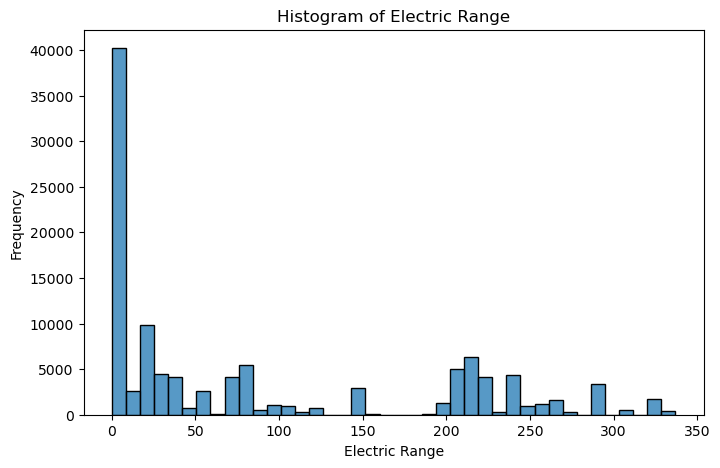
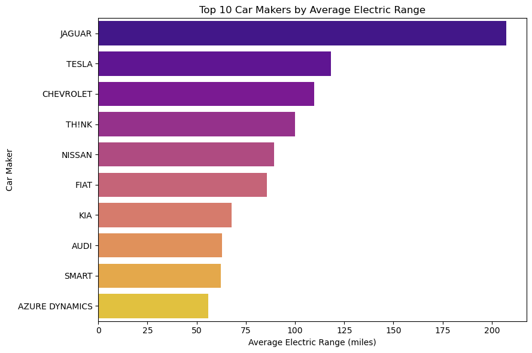
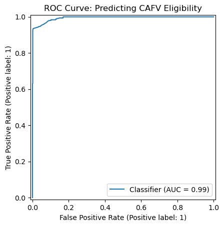
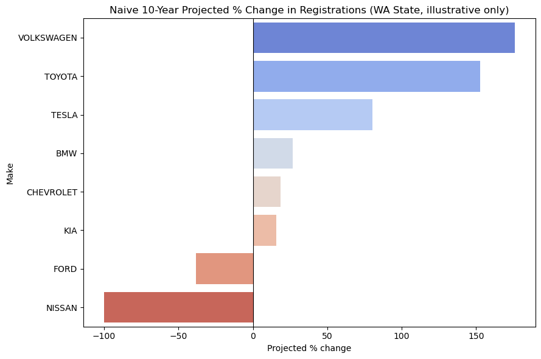

Independent Project
Oct 2024 – Nov 2024
An exploration of Washington State's public EV registration data — range patterns by manufacturer, a Clean Alternative Fuel Vehicle eligibility classifier, and an explicitly illustrative look at registration growth.
I built this as a self-contained example of taking a public dataset from raw CSV to a defensible modeling result in a short window, with a specific constraint I set for myself: don't let the target variable leak into the features. Washington's CAFV eligibility field is derived directly from electric range using a published threshold, so a model that's allowed to see range isn't predicting anything — it's just re-deriving arithmetic. Making the problem genuinely hard by removing that shortcut, and still landing at 0.994 ROC AUC, was the interesting result.
The growth-trend chart is included for the opposite reason: to show I know the difference between a real forecast and a back-of-envelope extrapolation, and I say so directly in the write-up rather than letting a confident-looking chart imply more than it should.
~112,000 EV registration records, about 99.7% from Washington State, with make, model, model year, vehicle type (BEV/PHEV), electric range, base MSRP, county, CAFV eligibility, and electric utility. I pulled this from the state's public open-data portal, then handled the usual real-world mess: inconsistent make/model capitalization, a long tail of low-volume manufacturers, and a partial-year final snapshot that needed to be excluded from any trend analysis rather than treated as a real data point.


Electric range directly defines CAFV eligibility, so including it would just let the model relearn the government's own threshold. To make it a real prediction problem, the model uses only Make, Model Year, Vehicle Type, and MSRP — asking whether eligibility can be predicted from a vehicle's basic specs and price alone.
| Class | Precision | Recall | F1 | Support |
|---|---|---|---|---|
| Not eligible | 0.86 | 0.94 | 0.90 | 2,952 |
| Eligible | 0.98 | 0.96 | 0.97 | 11,728 |
A ROC AUC of 0.994 without ever seeing electric range suggests eligibility is largely predictable from basic specs and price alone — most likely because make, model year, and MSRP are already strong proxies for range in this market.

A naive linear extrapolation of the last 10 complete registration years puts Volkswagen, Toyota, and Tesla on the steepest upward lines, with Nissan flat to declining.
Read as illustrative, not predictive
This reflects Washington State registrations only, fits a straight line through 10 years of counts, and ignores real-world factors like new model launches, competition, supply constraints, and incentive changes. It demonstrates a technique more than it forecasts an outcome — the most recent model year was also excluded from the fit since it's a partial-year snapshot, not a complete year.

Solo project — data sourcing, cleaning, exploratory analysis, the classifier, and the growth-trend model are all mine, built in about a week. Code and notebooks are on GitHub.